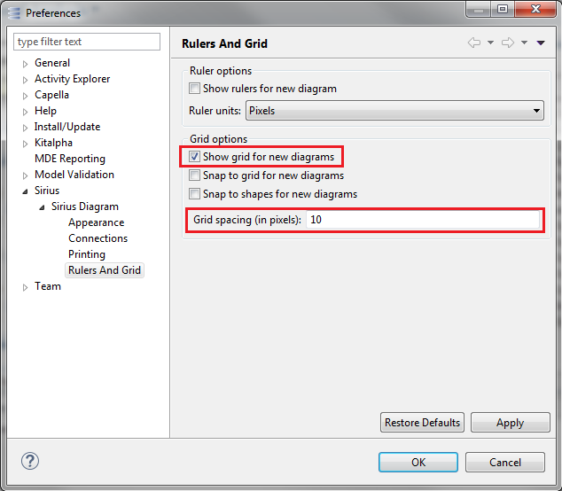
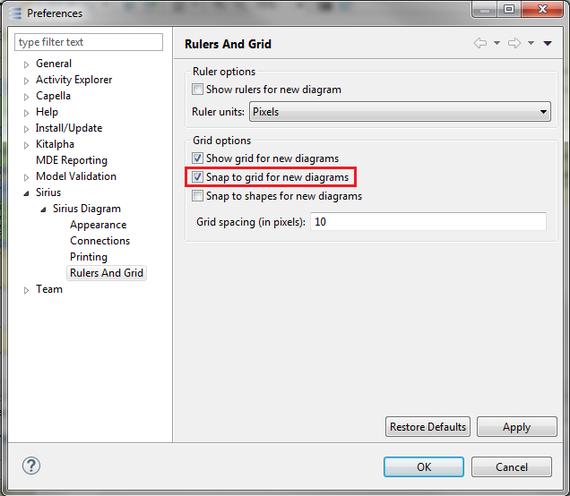
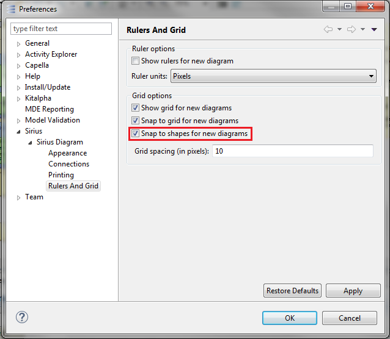

During diagram creation, grid can be visible or not. It facilitates the element placement to the user.
To manage it, some preferences have to be configured in Preferences/Sirius/SiriusDiagram/Ruler And Grids. Select Show grid for new diagrams and indicate the scale in grid spacing

The Snap to grid feature allows editing parts to snap to the grid when editing (during creation, moving or resizing).
Note: Grid snapping and visibility are two distinct properties, and it is possible to enable one without the other.
To manage it, some preferences have to be configured in Preferences/Sirius/SiriusDiagram/Ruler And Grids. Select Snap to grid for new diagrams.

Moreover, by pressing the Alt shortcut key, it is possible to temporarily place an element independently of the grid.
At the end of this action, the functionality will return to active automatically.
The Snap to shapes feature allows you to quickly align parts being dragged or resized to other parts in the diagram or that share the same parent (N.B: edit parts inside a compartment can only snap to each other). The snap is effective on top, bottom, right, left and center of the figure. Feedback is shown in the form of a gray line when a part is being attached to another part.
To manage it, some preferences have to be configured in Preferences/Sirius/SiriusDiagram/RulerAndGrids. Select Snap to shapes for new diagrams.

Moreover, by pressing the F4 shortcut key, it is possible to temporarily enable the snap to all shapes currently visible on the diagram.
At the end of this action, the functionality will return to active automatically.